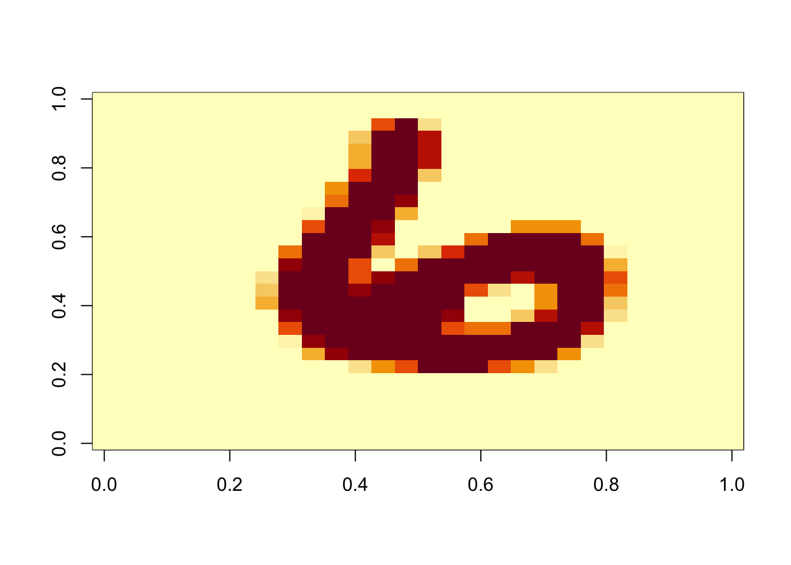
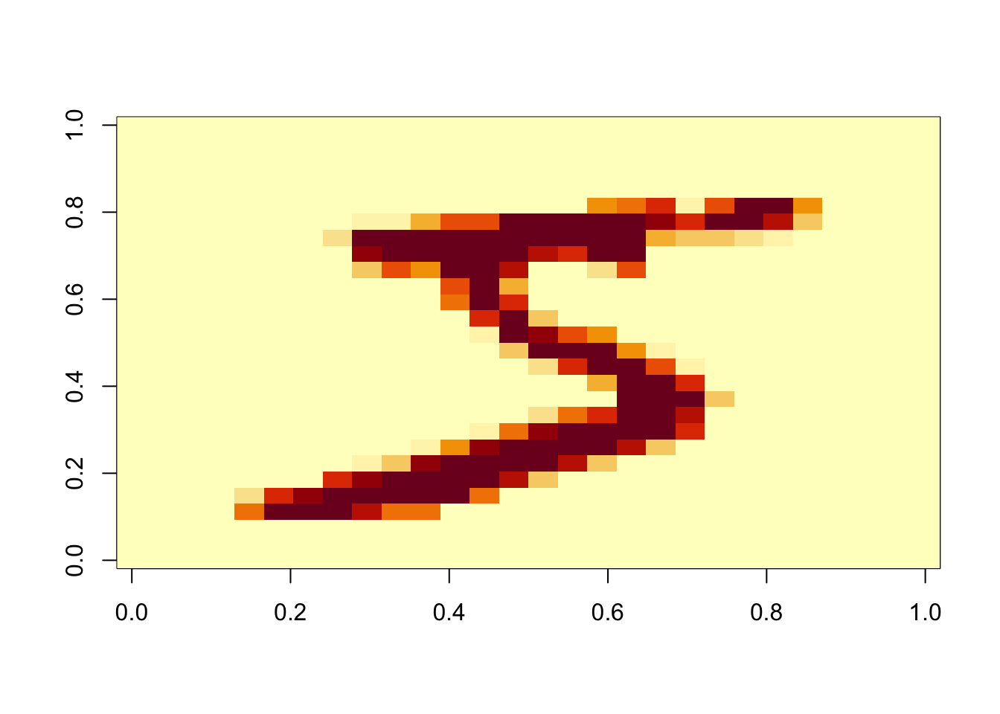

mvl_students <- readRDS("~/bst260hw/2023pset3-kimmmli/RDS/mv_st_new.rds")
train<-mvl_students$trainProblem Set 3
In this problem, you are tasked with two prediction tasks using machine learning models: 1) predict movie ratings from the MovieLens dataset, and 2) classify the digits from the MNIST handwritten digits. Your final submission in your GitHub repository should consist of four components: your Quarto file, your knitted HTML file, an RDS file of your MovieLens predictions, and an RDS file of your digits predictions. Please make sure you show ALL of your code, but do not print any large output (such as entire matrices/dataframes).
Part 1: MovieLens Data
1. Load in the training dataset from RDS directory, which can be accessed as mvl_students$train.
2. Preprocess the data in any way you find appropriate. This could include removing noninformative features, standardization, dimension reduction, transformation, and more.
# Replace data with null value in year with average year
average_year <- round(mean(train$year, na.rm = TRUE))
train$year[is.na(train$year)] <- average_year
dim(train)[1] 71801 7train$userId <- as.character(train$userId)
train$genres <- as.character(train$genres)
# Replace "(no genres listed)" with "NP"
train$genres[train$genres == "(no genres listed)"] <- "NP"
train$genres <- as.factor(train$genres)
dim(train)[1] 71801 7# Transform timestamp to date
train$reviewdate<-as.POSIXct(train$timestamp,origin = "1970-01-01",tz = "UTC")
train['reviewyear']<-as.integer(substr(train$reviewdate,0,4),16)
train['reviewmonth']<-as.integer(substr(train$reviewdate,6,7),16)
train['reviewday']<-as.integer(substr(train$reviewdate,9,10),16)
# Dummy genres
library(tidyr)
library(dplyr)
Attaching package: 'dplyr'The following objects are masked from 'package:stats':
filter, lagThe following objects are masked from 'package:base':
intersect, setdiff, setequal, uniontrain<-train |>
separate_rows(genres, sep = "\\|") |>
mutate(value = 1) |>
pivot_wider(names_from = genres, values_from = value, values_fill = 0)
# average rating for each movie
movie_avg_ratings <- train |>
group_by(movieId) |>
summarise(avg_movie_rating = mean(rating, na.rm = TRUE))
# average rating for each user
user_avg_ratings <- train |>
group_by(userId) |>
summarise(avg_user_rating = mean(rating, na.rm = TRUE))
# rating count for each user
user_rating_counts <- train |>
group_by(userId) |>
summarise(user_rating_count = n())
# rating count for each movie
movie_rating_counts <- train |>
group_by(movieId) |>
summarise(movie_rating_count = n())
# Merge rating counts
train <- train |>
left_join(user_rating_counts, by = "userId") |>
left_join(movie_rating_counts, by = "movieId")
# Merge average ratings
train <- train |>
left_join(movie_avg_ratings, by = "movieId") |>
left_join(user_avg_ratings, by = "userId")
# mean of all movie ratings
mean_rating <- mean(train$rating, na.rm = TRUE)
# minimum number of ratings
mini_rating <- quantile(train$rating, 0.25, na.rm = TRUE)
weighted_rating <- function(a, b, c, d) {
((a / (a + c)) * b) + ((c / (c + a)) * d)
}
train <- train |>
rowwise() |>
mutate(weighted_rating = weighted_rating(movie_rating_count, avg_movie_rating, mini_rating, mean_rating)) |>
ungroup()
columns_to_drop <- c("title", "reviewdate","timestamp")
trainset <- train[, -which(names(train) %in% columns_to_drop)]
colnames(trainset) <- gsub("[-_]", "", colnames(trainset))3. Train a machine learning model. Choose at least one model validation method (data splitting, smoothing techniques, nearest neighbors, or n-fold cross validation) that you learned in class to determine how well your model is doing in each case.
library(caret)Loading required package: ggplot2Loading required package: lattice# Set a random seed for reproducibility
set.seed(169)
n <- nrow(trainset)
train_index <- sample(1:n, 0.8 * n)
# Create training and testing sets
train_set <- trainset[train_index, ]
vali_set <- trainset[-train_index, ]
lm_fit <- lm(rating ~ . , data = train_set )
prediction = predict(lm_fit, vali_set)
print(c('The Linear model RMSE :', RMSE(prediction, vali_set$rating)))[1] "The Linear model RMSE :" "0.84198401355021" library(rpart)
dt_fit <- rpart(rating ~ . , data = train_set )
prediction = predict(dt_fit, vali_set)
print(c('The decision tree model RMSE :', RMSE(prediction, vali_set$rating)))[1] "The decision tree model RMSE :" "0.890748479620589" 4. Apply your final model to produce movie rating predictions on the test data, which can be accessed as mvl_students$test. Save your predictions in a vector of numeric values, named rating_predictions, as an RDS file called rating_predictions.RDS. Important: the order of your predictions must match the corresponding order of the test data.
# your code here
mvl_students <- readRDS("~/bst260hw/2023pset3-kimmmli/RDS/mv_st_new.rds")
test<-mvl_students$test
test$userId <- as.character(test$userId)
# Replace data with null value in year with average year
average_year <- round(mean(test$year, na.rm = TRUE))
test$year[is.na(test$year)] <- average_year
test$genres <- as.character(test$genres)
# Replace "(no genres listed)" with "NP"
test$genres[test$genres == "(no genres listed)"] <- "NP"
test$genres <- as.factor(test$genres)
# Transform timestamp to date
test$reviewdate<-as.POSIXct(test$timestamp,origin = "1970-01-01",tz = "UTC")
test['reviewyear']<-as.integer(substr(test$reviewdate,0,4),16)
test['reviewmonth']<-as.integer(substr(test$reviewdate,6,7),16)
test['reviewday']<-as.integer(substr(test$reviewdate,9,10),16)
# Dummy genres
library(tidyr)
library(dplyr)
test<-test |>
separate_rows(genres, sep = "\\|") |>
mutate(value = 1) |>
pivot_wider(names_from = genres, values_from = value, values_fill = 0)
user_counts <- test |>
group_by(userId) |>
summarize(user_review_count = n())
test <- test |>
left_join(movie_rating_counts, by = "movieId") |>
left_join(movie_avg_ratings, by = "movieId") |>
left_join(user_rating_counts, by = "userId") |>
left_join(user_avg_ratings, by = "userId")
test <- test |>
rowwise() |>
mutate(weighted_rating = weighted_rating(movie_rating_count, avg_movie_rating, mini_rating, mean_rating)) |>
ungroup()
columns_to_drop <- c("title", "reviewdate","timestamp")
testset <- test[, -which(names(test) %in% columns_to_drop)]
colnames(testset) <- gsub("[-_]", "", colnames(testset))
rating_predictions = predict(lm_fit, testset)
file_path <- "./RDS/rating_predictions_new.rds"
# Save the predictions to an RDS file
saveRDS(rating_predictions, file_path)Part 2: MNIST Digits
1. Load in the training dataset from the RDS directory, which can be accessed as digits_students$train. Note: if the training dataset is too large to work with on your computer, you may subset the data to a smaller size.
# your code here
digits_students <- readRDS("./RDS/digits_students.rds")
digittrain<-digits_students$train
str(digittrain)List of 2
$ images: int [1:52500, 1:784] 0 0 0 0 0 0 0 0 0 0 ...
$ labels: int [1:52500] 6 4 2 5 4 3 3 6 1 5 ...2. Preprocess the data in any way you find appropriate. This could include removing noninformative features, standardization, dimension reduction, transformation, and more.
reticulate::use_condaenv("/opt/miniconda3/bin/python", required = TRUE)
library(keras)
library(reticulate)
library(tensorflow)
Attaching package: 'tensorflow'The following object is masked from 'package:caret':
trainuse_python("/opt/miniconda3/bin/python")
py_config()python: /opt/miniconda3/bin/python
libpython: /opt/miniconda3/lib/libpython3.8.dylib
pythonhome: /opt/miniconda3:/opt/miniconda3
version: 3.8.16 | packaged by conda-forge | (default, Feb 1 2023, 16:01:13) [Clang 14.0.6 ]
numpy: /opt/miniconda3/lib/python3.8/site-packages/numpy
numpy_version: 1.22.1
tensorflow: /opt/miniconda3/lib/python3.8/site-packages/tensorflow
NOTE: Python version was forced by use_python() functionlibrary(keras)
images_3d <- array(digittrain$images, dim = c(52500, 28, 28))
image(images_3d[1,,][,28:1])
train_images <- array(images_3d, dim=c(52500, 28, 28, 1))
train_images <- train_images/255
train_labels<-digittrain$labels
train_labels<-to_categorical(as.integer(train_labels), num_classes = 10)3. Train a machine learning model. Choose at least one model validation method (data splitting, smoothing techniques, nearest neighbors, or n-fold cross validation) that you learned in class to determine how well your model is doing in each case.
# your code here
reticulate::use_condaenv("/opt/miniconda3/bin/python", required = TRUE)
library(keras)
library(reticulate)
library(tensorflow)
use_python("/opt/miniconda3/bin/python")
py_config()python: /opt/miniconda3/bin/python
libpython: /opt/miniconda3/lib/libpython3.8.dylib
pythonhome: /opt/miniconda3:/opt/miniconda3
version: 3.8.16 | packaged by conda-forge | (default, Feb 1 2023, 16:01:13) [Clang 14.0.6 ]
numpy: /opt/miniconda3/lib/python3.8/site-packages/numpy
numpy_version: 1.22.1
tensorflow: /opt/miniconda3/lib/python3.8/site-packages/tensorflow
NOTE: Python version was forced by use_python() functionnetwork <- keras_model_sequential() |>
layer_conv_2d(filters = 32, kernel_size = c(3,3), activation = "relu",
input_shape = c(28,28,1)) |>
layer_max_pooling_2d(pool_size = c(2,2)) |>
layer_conv_2d(filters = 64, kernel_size = c(3,3), activation = "relu") |>
layer_max_pooling_2d(pool_size = c(2,2)) |>
layer_conv_2d(filters = 64, kernel_size = c(3,3), activation = "relu")
model <- network |>
layer_flatten() |>
layer_dense(units = 64, activation = "relu") |>
layer_dense(units = 10, activation = "softmax")
modelModel: "sequential"
________________________________________________________________________________
Layer (type) Output Shape Param #
================================================================================
conv2d_2 (Conv2D) (None, 26, 26, 32) 320
max_pooling2d_1 (MaxPooling2D) (None, 13, 13, 32) 0
conv2d_1 (Conv2D) (None, 11, 11, 64) 18496
max_pooling2d (MaxPooling2D) (None, 5, 5, 64) 0
conv2d (Conv2D) (None, 3, 3, 64) 36928
flatten (Flatten) (None, 576) 0
dense_1 (Dense) (None, 64) 36928
dense (Dense) (None, 10) 650
================================================================================
Total params: 93322 (364.54 KB)
Trainable params: 93322 (364.54 KB)
Non-trainable params: 0 (0.00 Byte)
________________________________________________________________________________# Set a random seed
set.seed(199)
n <- nrow(train_images)
train_ind <- sample(1:n, 0.8 * n)
# Create training and testing sets
train_data <- train_images[train_ind, , , ]
train_label<-train_labels[train_ind,]
vali_data <- train_images[-train_ind, , ,]
vali_label<-train_labels[-train_ind,]
model |>compile(
optimizer = "rmsprop",
loss = "categorical_crossentropy",
metrics = c("accuracy")
)
model |> fit(
train_data, train_label, epochs = 5, batch_size = 64)Epoch 1/5
657/657 - 7s - loss: 0.2112 - accuracy: 0.9327 - 7s/epoch - 10ms/step
Epoch 2/5
657/657 - 6s - loss: 0.0531 - accuracy: 0.9830 - 6s/epoch - 9ms/step
Epoch 3/5
657/657 - 6s - loss: 0.0354 - accuracy: 0.9896 - 6s/epoch - 9ms/step
Epoch 4/5
657/657 - 6s - loss: 0.0261 - accuracy: 0.9921 - 6s/epoch - 9ms/step
Epoch 5/5
657/657 - 6s - loss: 0.0203 - accuracy: 0.9939 - 6s/epoch - 9ms/stepmetrics <- model |> evaluate(vali_data, vali_label)329/329 - 1s - loss: 0.0468 - accuracy: 0.9878 - 698ms/epoch - 2ms/stepmetrics loss accuracy
0.04682829 0.98780954 4. Apply your final model to produce digit predictions on the test data, which can be accessed as digits_students$test. Save your predictions in a vector of factors, named digit_predictions, as an RDS file called digit_predictions.RDS. Important: the order of your predictions must match the corresponding order of the test data.
# your code here
reticulate::use_condaenv("/opt/miniconda3/bin/python", required = TRUE)
digits_students <- readRDS("./RDS/digits_students.rds")
digittest<-digits_students$test
images_test <- array(digittest$images, dim = c(17500, 28, 28))
image(images_test[1,,][,28:1])
test_images <- array_reshape(images_test, c(17500, 28, 28, 1))
test_images <- test_images/255
digit_predictions <- predict(model, test_images)547/547 - 1s - 989ms/epoch - 2ms/stepdigit_predictions <- as.integer(max.col(digit_predictions))-1
file_path <- "./RDS/digit_predictions.rds"
# Save the predictions to an RDS file
saveRDS(digit_predictions, file_path)